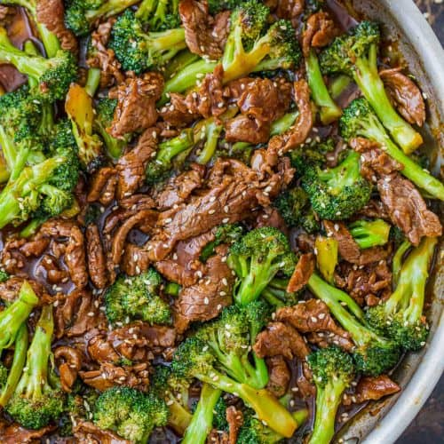

Beef and Broccoli

A Chinese Staple!
A famous Chinese dish consisting of beef and broccoli glazed with secret sauce./p>
Ingredients
- 1/3 cup oyster sauce
- 1/3 cup sherry
- 2 teaspoons Asian (toasted) sesame oil
- 1 teaspoon soy sauce
- 1 teaspoon white sugar
- 1 teaspoon cornstarch
- 3/4 pound beef round steak, cut into 1/8-inch thick strips
- 3 tablespoons vegetable oil, plus more if needed
- 1 thin slice of fresh ginger root
- 1 clove garlic, peeled and smashed
- 1 pound broccoli, cut into florets
Steps
- Whisk together oyster sauce, sherry, sesame oil, soy sauce, sugar, and cornstarch in a bowl; stir until sugar has dissolved.
- Place steak in a shallow bowl. Pour oyster sauce mixture over meat, stir to coat, and marinate for at least 30 minutes in the refrigerator.
- Heat vegetable oil in a wok or large skillet over medium-high heat. Add ginger and garlic; let sizzle for about 1 minute to flavor oil, then remove and discard. Stir in broccoli. Toss and stir until bright green and almost tender, 5 to 7 minutes. Remove broccoli from the wok and set aside.
- Add a little more oil to the wok, if needed, then add beef with marinade. Stir and toss until sauce thickens and turns shiny and meat is no longer pink, about 5 minutes. Return broccoli to the wok; stir until heated through, about 3 minutes.